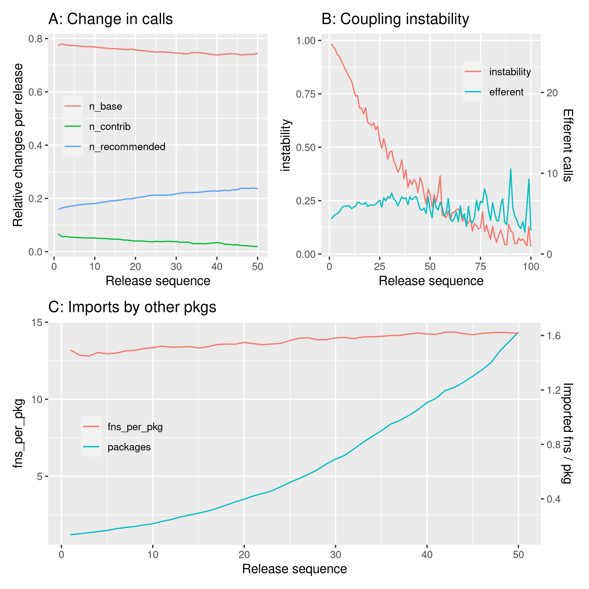

library ("pkgstatsAnalyses")
here <- here::here ()
v_data_dir <- file.path (here, "vignettes", "data")
logmean <- function (x, ...) {
10 ^ mean (log10 (x [which (x > 0)]), na.rm = TRUE)
}
datafile <- file.path (here, "data-raw", "pkgstats-results.Rds")
fig07_png <- file.path (here, "vignettes", "figures", "fig07.png")
f <- file.path (v_data_dir, "fig07_deps_p1.Rds")
calc_fig7_p1_deps <- !file.exists (f) & !file.exists (fig07_png)
recommended <- recommended_pkgs ()
x <- load_pkgstats_data (datafile, raw = TRUE, latest = FALSE)
f <- file.path (v_data_dir, "fig07-coupling_deps.Rds")
if (!file.exists (f)) {
deps <- coupling_dependencies (x)
saveRDS (deps, f)
}
deps <- readRDS (f)
deps_p1 <- deps |>
group_by (from, version) |>
summarise (n_base = n_unique [to == "base"],
n_recommended = sum (n_unique [to %in% recommended]),
n_contrib = sum (n_unique [!to %in% c ("base", recommended)]),
.groups = "keep") |>
mutate (n_total = n_base + n_recommended + n_contrib,
n_base = n_base / n_total,
n_recommended = n_recommended / n_total,
n_contrib = n_contrib / n_total) |>
group_by (from) |>
summarise (n_base = n_base / lag (n_base),
n_recommended = n_recommended / lag (n_recommended),
n_contrib = n_contrib / lag (n_contrib),
seq = seq_along (n_base),
.groups = "keep") |>
mutate_at(vars (n_base, n_recommended, n_contrib),
~replace (., !is.finite (.), NA)) |>
group_by (seq) |>
summarise (n_base = mean (n_base, na.rm = TRUE),
n_recommended = mean (n_recommended, na.rm = TRUE),
n_contrib = mean (n_contrib, na.rm = TRUE)) |>
pivot_longer (cols = c (n_base, n_recommended, n_contrib)) |>
filter (is.finite (value))
saveRDS (deps_p1, f)
deps_p1 <- deps |>
group_by (from) |>
mutate (seq = seq_along (from)) |>
group_by (seq) |>
summarise (n_base = sum (n_unique [to == "base"]),
n_recommended = sum (n_unique [to %in% recommended]),
n_contrib = sum (n_unique [!to %in% c ("base", recommended)]),
.groups = "keep") |>
mutate (n_total = n_base + n_recommended + n_contrib,
n_base = n_base / n_total,
n_recommended = n_recommended / n_total,
n_contrib = n_contrib / n_total)
deps_p1 |>
pivot_longer (c (n_base, n_recommended, n_contrib)) |>
filter (seq <= 50) |>
ggplot (aes (x = seq, y = value, colour = name)) +
geom_line (lty = 2) +
geom_smooth (method = "loess", formula = "y ~ x", se = FALSE, lwd = 0.7) +
theme (legend.title = element_blank(),
legend.position = c (0.50, 0.9),
legend.background = element_rect(fill='transparent', colour='transparent')) +
xlab ("Release sequence") +
ylab ("Relative changes per release") +
ggtitle ("A: Change in calls") -> p1
readRDS (f) |>
filter (seq <= 50 & name != "n_contrib") |>
ggplot (aes (x = seq, y = value, colour = name)) +
geom_line (lty = 2) +
geom_smooth (method = "loess", formula = "y ~ x", se = FALSE, lwd = 0.7) +
theme (legend.title = element_blank(),
legend.position = c (0.50, 0.9),
legend.background = element_rect(fill='transparent', colour='transparent')) +
xlab ("Release sequence") +
ylab ("Relative changes per release") +
ggtitle ("A: Change in calls") -> p1
# couplings_releases data are calculated in the main pkg fn
# `couplings_releases` in R/couplings.R, and uploaded as binary to GH release.
f <- file.path (here, "data-raw", "couplings_releases.Rds")
if (!file.exists (f)) {
u <- paste0 ("https://github.com/mpadge/pkgstats-analyses/",
"releases/download/v0.0.1/",
"couplings_releases.Rds")
download.file (u, f)
}
# unique & total instabilities are virtually identical
deps_p2 <- readRDS (f)
#deps_p2$efferent_unique [deps_p2$efferent_unique == 0L] <- NA_integer_
deps_p2 <- deps_p2 |>
group_by (seq) |>
summarise (instability = logmean (instability_unique, na.rm = TRUE),
efferent = logmean (efferent_unique, na.rm = TRUE))
coeff_p2 <- max (deps_p2$efferent, na.rm = TRUE) / max (deps_p2$instability, na.rm = TRUE)
colours_p2 <- c ("instability" = "#F8766D",
"efferent" = "#00BFC4")
deps_p2 |>
filter (seq <= 100) |>
ggplot (aes (x = seq)) +
geom_line (aes (y = instability, col = "instability")) +
geom_line (aes (y = efferent / coeff_p2, col = "efferent")) +
scale_y_continuous (
name = "instability",
sec.axis = sec_axis (~.*coeff_p2, name = "Efferent calls")) +
xlab ("Release sequence") +
scale_colour_manual (values = colours_p2) +
theme (legend.title = element_blank(),
legend.position = c (0.80, 0.8),
legend.background = element_rect(fill='transparent', colour='transparent')) +
ggtitle ("B: Coupling instability") -> p2
# afferent fn imports by other pkgs
deps_p3 <- readRDS (f)
deps_p3$afferent_fns_per_pkg [which (is.na (deps_p3$afferent_fns_per_pkg))] <- 0L
deps_p3 <- deps_p3 |>
group_by (seq) |>
summarise (packages = logmean (afferent_npkgs),
fns_per_pkg = logmean (afferent_fns_per_pkg)) |>
filter (seq <= 50)
coeff_p3 <- max (deps_p3$fns_per_pkg) / max (deps_p3$packages)
# colours from `ggplot_build(p1)$data`:
colours_p3 <- c ("fns_per_pkg" = "#F8766D",
"packages" = "#00BFC4")
p3 <- ggplot (deps_p3, aes (x = seq)) +
geom_line (aes (y = packages, col = "packages")) +
geom_line (aes (y = fns_per_pkg / coeff_p3, col = "fns_per_pkg")) +
scale_y_continuous (
name = "fns_per_pkg",
sec.axis = sec_axis (~.*coeff_p3, name = "Imported fns / pkg")) +
xlab ("Release sequence") +
scale_colour_manual (values = colours_p3) +
theme (legend.title = element_blank(),
legend.position = c (0.15, 0.5),
legend.background = element_rect(fill='transparent', colour='transparent')) +
ggtitle ("C: Imports by other pkgs")
knitr::include_graphics (fig07_png)

Fig. 7 Dependency networks between packages over sequential releases. (A) Proportional change in numbers of calls to base and recommended packages between successive releases. Solid lines show loess-smoothed interpolations, while dashed lines show raw values (and not values from cran snapshots). (B) Coupling instability. (C) Average numbers of functions from each package imported by other packages, and averge numbers of times packages are imported by other packages.
cp <- readRDS (f) |>
group_by (seq) |>
slice_max (seq)
x <- load_pkgstats_data (datafile, raw = TRUE, latest = FALSE) |>
group_by (date) |>
slice_max (date) |>
ungroup () |>
select (package, n_fns_r_exported)
cp <- left_join (cp, x, by = "package")
tmp <- data.frame (aff = log10 (cp$afferent_unique),
nfns = log10 (cp$n_fns_r_exported)) |>
filter (is.finite (aff) & is.finite (nfns))
ggplot (tmp, aes (x = nfns, y = aff)) +
geom_hex () +
geom_smooth (method = "lm", formulat = "y ~ x")
mod <- lm (aff ~ nfns, data = tmp)